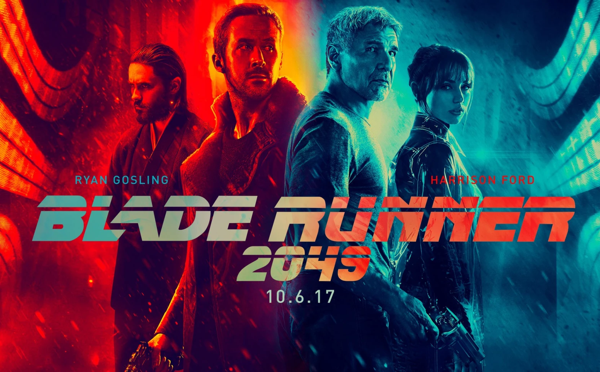

"Blade Runner 2049", dirigido por Denis Villeneuve, é uma impressionante continuação do clássico de ficção científica de Ridley Scott. Lançado em 2017, o filme apresenta uma visão distópica do futuro, onde a humanidade coexiste com replicantes, androides criados para servir. Esta sequência não apenas honra o legado do filme original, mas também o eleva a novos patamares, entregando uma experiência cinematográfica extraordinária.
Menu
Gerais
Blade Runner 2049
"Blade Runner 2049" é uma obra-prima da ficção científica, uma sequência impressionante que expande o universo visual e temático do original, trazendo uma história envolvente e visualmente deslumbrante.
Por Isaque G. S. Brandão | 07/06/2024

Fonte: Netflix
Apresentação
Início
A história se passa em Los Angeles, no ano de 2049, trinta anos após os eventos do filme original. A sociedade é agora ainda mais dividida, com replicantes Nexus-9 obedecendo aos humanos e caçadores de replicantes, conhecidos como blade runners, ainda em busca dos modelos mais antigos que se rebelaram contra seus criadores. O filme segue K, um blade runner interpretado por Ryan Gosling, que desenterra um segredo enterrado há muito tempo, levando-o a questionar sua própria identidade e propósito.
Trailer do filme
"Blade Runner 2049"
Desenvolvimento
Enquanto K segue as pistas de sua investigação, ele é levado a uma jornada de descoberta que o leva aos cantos mais sombrios e misteriosos da sociedade. Ele encontra personagens cativantes, como Joi, uma inteligência artificial interpretada por Ana de Armas, e o misterioso Niander Wallace, interpretado por Jared Leto. À medida que a trama se desenrola, somos mergulhados em um mundo repleto de dilemas morais, questões existenciais e reviravoltas surpreendentes.
A cinematografia deslumbrante de Roger Deakins transporta o espectador para um futuro distópico, onde arranha-céus decadentes se erguem sob um céu sombrio e cinzento. Cada cena é meticulosamente elaborada, criando um ambiente imersivo e visceral que se torna parte integrante da narrativa. A trilha sonora pulsante de Hans Zimmer e Benjamin Wallfisch complementa perfeitamente a atmosfera opressiva do filme, adicionando uma camada adicional de tensão e drama.
Conforme K se aprofunda em sua investigação, ele se vê confrontando não apenas seus inimigos externos, mas também os demônios interiores que o assombram. Sua jornada o leva a questionar sua própria humanidade e o que significa ser verdadeiramente vivo. Enquanto isso, as ramificações de suas descobertas têm o potencial de abalar os alicerces da sociedade e mudar o curso da história para sempre.
Conclusão
"Blade Runner 2049" é uma obra-prima visual e narrativa que transcende o gênero da ficção científica. Denis Villeneuve cria um universo ricamente detalhado, repleto de imagens deslumbrantes e uma trilha sonora envolvente.
O filme mantém o tom sombrio e atmosférico do original, ao mesmo tempo em que expande sua mitologia de maneiras inesperadas. Com performances brilhantes, direção magistral e uma narrativa complexa, "Blade Runner 2049" é uma experiência cinematográfica que fica na mente do espectador muito depois que as luzes do cinema se apagam.
Veja também

Conheça "Resistência"
"Resistência" é um thriller de ficção científica onde humanos lutam contra uma inteligência artificial rebelde que ameaça exterminar a humanidade. A história explora temas de sobrevivência e moralidade em um futuro distópico.

Resenha de Jogador Nº 1
Em um futuro distópico, um jovem participa de uma caça ao tesouro virtual no OASIS, um universo de realidade virtual, para ganhar o controle da plataforma e fortuna do criador.

Analisando "O Vingador do Futuro"
Um operário começa a suspeitar que é um espião após uma visita a uma empresa que implanta memórias falsas, desencadeando uma intensa perseguição em um mundo futurista.